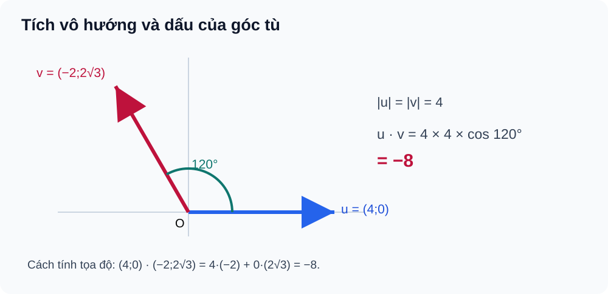
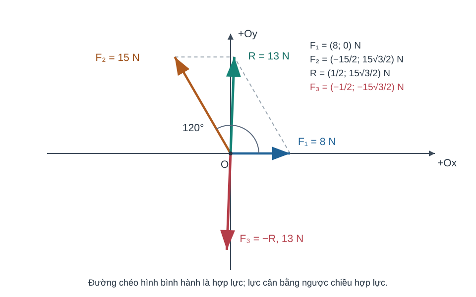

Bài 11. Tích vô hướng của hai vectơ
TOÁN 10 · CHƯƠNG IV · KIẾN THỨC SGK KNTT
Học kiến thức và ví dụ, rồi luyện tập theo từng kĩ năng.
Cùng tìm hiểu
Hai lực có cùng độ lớn chưa chắc tác động như nhau. Khi lực kéo tạo với hướng di chuyển một góc nhọn, nó hỗ trợ chuyển động; khi góc tù, một phần lực có tác dụng cản lại. Ta cần một phép toán có thể biến thông tin độ lớn và góc giữa hai vectơ thành một con số có dấu. Phép toán đó là tích vô hướng.
Với hai vectơ khác không, tích vô hướng bằng tích độ dài của chúng rồi nhân với \(\cos\) góc xen giữa. Từ cách định nghĩa ấy, em có thể dự đoán dấu mà chưa tính: góc nhọn cho kết quả dương, góc vuông cho 0, góc tù cho âm. Đây không phải một quy tắc dấu phải học thuộc riêng; nó xuất phát từ dấu của \(\cos\) đã học ở Bài 5.
Khi đưa vectơ lên hệ trục, tích vô hướng còn tính được bằng tổng tích hai thành phần tương ứng. Điều này giúp kiểm vuông góc bằng phép tính thay vì chỉ quan sát hình, đồng thời là cơ sở để tính công của lực.
Ví dụ trực quan
Tích vô hướng mô tả mức độ cùng hướng
Cách đọc hình. Quan sát góc tù giữa hai vectơ trong hình: cos âm nên tích vô hướng âm, dù độ dài hai vectơ đều dương.

Một lực tác dụng dọc hướng di chuyển có ích hơn lực kéo vuông góc; lực ngược chiều chuyển động có thể gây công âm.
Nhớ độ dài vectơ, góc giữa hai vectơ khác không thuộc 0°–180° và cos góc nhọn/vuông/tù.
Tích vô hướng đo tích hai độ lớn có xét thành phần cùng hướng bằng cos: \(\vec u\cdot\vec v=|\vec u||\vec v|\cos\theta\). Nếu vuông góc tích 0, nếu ngược hướng tích âm; góc xác định duy nhất khi cả hai khác \(\vec0\); SGK quy ước góc với vectơ-không được chọn tùy ý và coi vectơ-không vuông góc với mọi vectơ.
Chọn định nghĩa hình học nếu biết hai độ dài và góc giữa vectơ; nếu một vectơ bằng 0, tích là 0 theo đại số nhưng không gán góc thường.
Vận dụng. Cho \(|\vec u|=2\), \(|\vec v|=3\), góc giữa hai vectơ là 120°. Tích vô hướng âm hay dương, bằng bao nhiêu?
Đối chiếu
Kết quả: \(\vec u\cdot\vec v=2\cdot3\cdot\cos120^\circ=-3\).
Vì sao: Cos120°=−1/2 nên tích âm; không thể dùng cos60° vì đây là góc giữa hai vectơ đang hướng xa nhau.
Tại sao tích vô hướng có thể tính bằng hai cặp số?
Cách đọc hình. Đọc hướng hợp lực/lực giữ cân bằng và đối chiếu hai hướng tác dụng trên hình; khi tính công chỉ dùng thành phần lực theo hướng chuyển dời.

Trong bản đồ Oxy, biết hai tọa độ vectơ có thể suy mức độ cùng hướng mà không cần đo góc.
Đã biết vectơ đơn vị \(\vec i,\vec j\) vuông góc, \(\vec u=u_x\vec i+u_y\vec j\) và tính chất phân phối.
Vì \(\vec i\cdot\vec i=1\), \(\vec j\cdot\vec j=1\), \(\vec i\cdot\vec j=0\), khi nhân phân phối chỉ còn \(u_xv_x+u_yv_y\). Đây là công thức tọa độ của cùng tích vô hướng hình học.
Khi có tọa độ, nhân các thành phần cùng trục rồi cộng; không nhân nhầm ux với vy hoặc lấy tích độ dài thay cho dấu.
Vận dụng. Cho \(\vec u=(2;-1)\), \(\vec v=(3;4)\). Tính \(\vec u\cdot\vec v\).
Đối chiếu
Kết quả: \(2\cdot3+(-1)\cdot4=2\).
Vì sao: Thành phần theo Ox cho 6, theo Oy cho −4, cộng là 2. Tích vô hướng là một số, không phải vectơ.
Vuông góc có thể kiểm bằng số
Thay vì đo góc trên hình vẽ không chuẩn tỉ lệ, ta có thể dùng tích vô hướng bằng 0 để nhận biết hai vectơ vuông góc.
Biết cos90°=0 và công thức tọa độ tích vô hướng, cùng điều kiện cả hai vectơ khác không.
Nếu hai vectơ khác không có tích vô hướng 0 thì cos góc giữa chúng là 0, vì tích độ dài dương; góc bằng 90°. Chiều ngược lại cũng đúng.
Kiểm tra hai vectơ khác không trước, sau đó tính tích vô hướng; \(\vec0\cdot\vec v=0\) nhưng không suy góc vuông với vectơ-không.
Vận dụng. \(\vec u=(2;3)\), \(\vec v=(3;-2)\). Chúng có vuông góc không? Vì sao điều kiện khác 0 quan trọng?
Đối chiếu
Kết quả: Có, vì \(\vec u\cdot\vec v=2\cdot3+3\cdot(-2)=0\), và cả hai khác \(\vec0\).
Vì sao: Nếu một vectơ bằng 0 thì tích vẫn bằng 0 nhưng góc giữa hai vectơ không xác định theo định nghĩa dùng ở đây.
Công của lực: độ lớn không đủ
Đẩy một vật 3 m cùng chiều lực khác với kéo vật theo chiều ngược hoặc vuông góc lực, dù độ lớn lực và quãng dịch chuyển giống nhau.
Biết lực \(\vec F\) đo N, độ dời \(\vec s\) đo m, góc giữa hai vectơ khác không và tích vô hướng.
Chỉ thành phần lực cùng chiều độ dời tạo công có dấu: \(W=\vec F\cdot\vec s=|\vec F||\vec s|\cos\theta\); cùng chiều cho dương, ngược chiều cho âm, vuông góc cho 0.
Xác định hướng tương đối của lực và độ dời trước, kiểm đơn vị N·m=J; không lấy giá trị tuyệt đối khi bài hỏi công có dấu.
Vận dụng. Một lực 10 N hướng Đông, vật dịch chuyển 3 m hướng Tây. Công của lực là bao nhiêu J? Nếu dịch chuyển vuông góc lực thì sao?
Đối chiếu
Kết quả: Cùng phương ngược hướng: \(W=10\cdot3\cos180^\circ=-30\) J; vuông góc: \(W=0\) J.
Vì sao: Cos180°=−1, cos90°=0. Công là vô hướng có dấu, khác với độ lớn lực hay quãng đường.
Thuật ngữ, kiến thức và kỹ năng
Thuật ngữ: Tích vô hướng, góc giữa hai vectơ, dấu của cos góc nhọn/tù, vuông góc, tích vô hướng theo tọa độ, công của lực.
Sau bài học, em cần làm được: Chọn đúng góc giữa hai vectơ; tính tích vô hướng theo hình học hoặc tọa độ; suy góc vuông từ tích bằng 0 với vectơ khác không; giải thích ý nghĩa dấu trong ứng dụng.
2.1. Góc giữa hai vectơ
Định nghĩa (SGK, trang 66). Với hai vectơ \(\vec u,\vec v\) đều khác \(\vec0\), lấy điểm \(A\) bất kì và dựng \(\overrightarrow{AB}=\vec u\), \(\overrightarrow{AC}=\vec v\). Góc \(\widehat{BAC}\) được gọi là góc giữa \(\vec u\) và \(\vec v\), kí hiệu \((\vec u,\vec v)\); số đo thuộc \([0^\circ,180^\circ]\).
Chú ý – quy ước về vectơ-không trong SGK (trang 66): Góc giữa \(\vec u\) và \(\vec0\) có thể nhận một giá trị tùy ý từ \(0^\circ\) đến \(180^\circ\), không phải một góc xác định duy nhất theo cách dựng hai vectơ khác không. Vectơ \(\vec0\) được coi là vuông góc với mọi vectơ. Khi hai vectơ khác không có góc \(90^\circ\), chúng vuông góc với nhau.
Ghi nhớ: Hai vectơ khác không cùng hướng thì góc bằng \(0^\circ\); ngược hướng thì góc bằng \(180^\circ\). Góc nhọn có \(\cos\theta>0\), góc vuông có \(\cos\theta=0\), góc tù có \(\cos\theta<0\).
2.2. Tích vô hướng của hai vectơ
Định nghĩa (SGK, trang 67). Với \(\vec u,\vec v\) đều khác \(\vec0\), tích vô hướng là một số thực:
Nếu có một vectơ bằng \(\vec0\), tích vô hướng bằng \(0\). Khi đó không cần và không được suy ra một góc duy nhất từ phép chia cho tích các độ dài.
Vận dụng – công của lực (SGK, trang 67). Với lực không đổi \(\vec F\) (newton) và độ dời \(\vec s\) (mét), công \(W=\vec F\cdot\vec s\) (joule). Khi cả hai khác \(\vec0\), ta dùng \(W=|\vec F|\,|\vec s|\cos(\vec F,\vec s)\); khi một vectơ bằng \(\vec0\), công bằng \(0\). Dấu của công phụ thuộc hướng lực so với độ dời.
2.3. Biểu thức tọa độ và tính chất của tích vô hướng
Công thức tọa độ (SGK, trang 68). Với \(\vec u=(a;b)\), \(\vec v=(c;d)\):
Tính chất: \(\vec u\cdot\vec v=\vec v\cdot\vec u\); \((\vec u+\vec v)\cdot\vec w=\vec u\cdot\vec w+\vec v\cdot\vec w\); \((t\vec u)\cdot\vec v=t(\vec u\cdot\vec v)\); \(\vec u\cdot\vec u=|\vec u|^2\).
Hệ quả: \(|\vec u\pm\vec v|^2=|\vec u|^2+|\vec v|^2\pm2\vec u\cdot\vec v\).
Điều kiện sử dụng: Khi cả hai vectơ khác \(\vec0\), \(\vec u\perp\vec v\iff\vec u\cdot\vec v=0\) và
Công thức cos dùng được cả khi tích vô hướng bằng \(0\), miễn là hai độ dài đều dương. Nếu có vectơ-không, không chia cho \(0\); giữ quy ước SGK rằng \(\vec0\) vuông góc với mọi vectơ.
Trước khi xem lời giải, hãy xác định dữ kiện, điều phải tìm và lý do chọn cách giải. Sau đó kiểm tra lại điều kiện áp dụng và kết quả, thay vì chỉ nhìn phép tính cuối cùng.
Ví dụ 1. Dấu tích vô hướng ở góc tù
Đề: Cho \(|\vec u|=4\), \(|\vec v|=3\) và góc giữa chúng là \(120^\circ\). Tính \(\vec u\cdot\vec v\).
Giải: \(\vec u\cdot\vec v=4\cdot3\cos120^\circ=12(-1/2)=-6\).
Tự kiểm: Góc tù có cos âm.
Ví dụ 2. Hai vectơ vuông góc trong tọa độ
Đề: Cho \(\vec u=(2;-1)\), \(\vec v=(1;2)\). Kiểm tra vuông góc.
Giải: \(\vec u\cdot\vec v=2\cdot1+(-1)\cdot2=0\). Hai vectơ đều khác \(\vec0\), suy ra vuông góc.
Tự kiểm: Phải kiểm hai vectơ khác không.
Ví dụ 3. Tam giác vuông bằng tích vô hướng
Đề: Cho \(A(1;1)\), \(B(4;1)\), \(C(1;5)\). Xác định góc A và diện tích tam giác.
Giải: \(\overrightarrow{AB}=(3;0)\), \(\overrightarrow{AC}=(0;4)\), tích bằng 0, nên \(\angle A=90^\circ\) và \(S=\tfrac12\cdot3\cdot4=6\).
Tự kiểm: Chọn hai vectơ cùng gốc A để xét góc A.
Nhầm tích vô hướng với tích độ dài; bỏ điều kiện khác 0
- Điểm nghẽn: Dùng công thức cos khi có vectơ-không, hoặc bỏ quên quy ước vuông góc của SGK.
- Bản chất cần sửa: Tích vô hướng là số; SGK coi vectơ-không vuông góc với mọi vectơ, nhưng phép chia tính cos chỉ hợp lệ khi hai độ dài dương.
- Cách kiểm: 1. Xét trường hợp vectơ-không. 2. Khi có vectơ-không, tích bằng 0 và vuông góc theo quy ước SGK. 3. Với hai vectơ khác không, tính tích vô hướng. 4. Chỉ tính cos bằng phép chia khi mẫu dương. 5. Luyện B11-P03.
- Liên kết item có sẵn: B11-C02, B11-P02, B11-P03. Không clone câu hoặc giải vào HELP_ID.
- Assessment safety: hỗ trợ chỉ tại Knowledge/Practice, không hiển thị trong phiên Tự kiểm tra trước Final Submit.
Dấu cos góc tù hoặc sai công của lực
- Điểm nghẽn: Quên cos/góc hoặc đơn vị W (J).
- Bản chất cần sửa: Định nghĩa \(W=\vec F\cdot\vec s\), đơn vị N·m; dấu W theo cos góc lực-độ dời.
- Quy trình 5 bước: 1. Ghi rõ góc hai vectơ. 2. Đối chiếu dấu cos. 3. Tính dot. 4. Ghi đơn vị J. 5. Tự luyện B11-P05.
- Liên kết item có sẵn: B11-P01, B11-P05, W11-ANCHOR. Không clone câu hoặc giải vào HELP_ID.
- Assessment safety: hỗ trợ chỉ tại Knowledge/Practice, không hiển thị trong phiên Tự kiểm tra trước Final Submit.
Ứng dụng: Hợp lực góc 120° và lực giữ cân bằng
Một vòng móc được kéo bởi hai dây theo hai hướng; muốn giữ vòng móc đứng yên, lực thứ ba phải triệt tiêu tổng vectơ của hai lực, không phải triệt tiêu tổng hai con số độ lớn.
Kiến thức tiền đề: Quy tắc hình bình hành B08, định nghĩa lực đối của một vectơ; góc giữa hai vectơ khác 0 và tích vô hướng B11. Cần phân biệt “hai lực bằng độ lớn” với “hai lực bằng vectơ”.
Dời hai lực cùng gốc, đường chéo hình bình hành là hợp lực R=F₁+F₂. Lực giữ cân bằng F₃=−R. Vì |u+v|²=|u|²+|v|²+2u·v, ta có |R|²=|F₁|²+|F₂|²+2|F₁||F₂|cosθ; Pythagoras chỉ là trường hợp θ=90°.
Hướng dẫn đọc hình: Vẽ O là điểm đặt, Ox trùng hướng F₁, F₂ quay ngược chiều kim đồng hồ một góc θ. R là đường chéo, F₃ có cùng độ dài nhưng chiều đối ngược R. Trên hình, góc θ phải là góc giữa F₁ và F₂, không phải giữa F₂ và F₃.
Dùng công thức tổng vectơ khi biết độ lớn và góc; dùng tọa độ nếu cần hướng và các thành phần. Kiểm 0≤|R|≤|F₁|+|F₂|; không kết luận lực thứ ba cùng chiều với hợp lực.
Vận dụng. Hai lực bằng nhau, mỗi lực 4 N, tạo góc 60°. Muốn vật cân bằng, lực thứ ba phải có độ lớn và chiều như thế nào? Hãy tự dự đoán trước khi mở kết quả.
Đối chiếu
|F₁+F₂|=√(4²+4²+2·4·4·cos60°)=4√3 N. Vì tổng ba lực bằng vectơ 0, F₃=−(F₁+F₂) nên lực thứ ba có độ lớn 4√3 N và ngược chiều hợp lực. Nếu đáp 8 N, xem HELP-G10-CHIV-FORCE-TR01.
Ví dụ có hướng dẫn — EX-G10-B08-FORCE-TR01
Tình huống: Hai dây đồng thời kéo vòng móc với lực 6 N và 6 N, tạo góc 120°. Một dây thứ ba giữ vòng đứng yên. Hãy tìm độ lớn và chiều của lực thứ ba.
- Chọn mô hình: Cân bằng nghĩa là
F₁+F₂+F₃=0, vì thế phải tìm hợp lực hai dây trước khi tìm F₃. - Chọn định lí: Góc 120° không vuông, nên
|F₁+F₂|²=6²+6²+2·6·6·cos120°=72−36=36; suy ra hợp lực có độ lớn 6 N. - Giải thích chiều:
F₃=−(F₁+F₂), nghĩa là 6 N ngược chiều đường chéo hợp lực; không phải ngược riêng một trong hai dây. - Kiểm: Hợp lực bằng 6 N nằm trong
[0,12]N, phù hợp bất đẳng thức tam giác. Nếu dùng 6+6=12 N là nhầm độ lớn với tổng vectơ.
Vì sao chọn cách này? Không thể cộng thẳng độ lớn khi hai lực không cùng phương. Hai độ lớn và góc cho ta độ lớn hợp lực; để xác định hướng, cần đọc hướng vectơ hoặc lập hệ trục. Điều thú vị là lực thứ ba có thể bằng độ lớn một trong hai lực ban đầu dù không cùng phương với lực ấy.
Tự khắc phục trong năm bước
-
Nhận diện: Em đã cộng thẳng
6+6, dùng định lí Pythagore cho góc 120°, hay lấy lực thứ ba cùng chiều với hợp lực? -
Chẩn đoán: vẽ lại hai vectơ xuất phát O và đánh dấu góc 120°; thử hướng F₃ xem ba mũi tên có khép thành đường gấp khúc không.
-
Lấp nền: B08 quy tắc hình bình hành và vectơ đối; B11
u·v=|u||v|cosθ. -
Tự sửa: Tính
R²trước, kiểm|R|≤12N, rồi đặtF₃=−R; kiểm tổng hai thành phần theo Ox và Oy bằng 0. -
Luyện lại: Ôn cách cộng vectơ ở Bài 8, rồi luyện một câu về tích vô hướng trong Bài 11. Nếu đã xem đáp án, hãy chọn câu khác để tự kiểm tra mà không dựa vào lời giải.
Học tiếp: Core và Luyện tập · Tự kiểm tra cuối chương.
Nguồn toán học: SGK Toán 10 Kết nối tri thức với cuộc sống và học liệu SLM hiện hành. Lời giảng được biên tập nhằm hỗ trợ tự học độc lập.